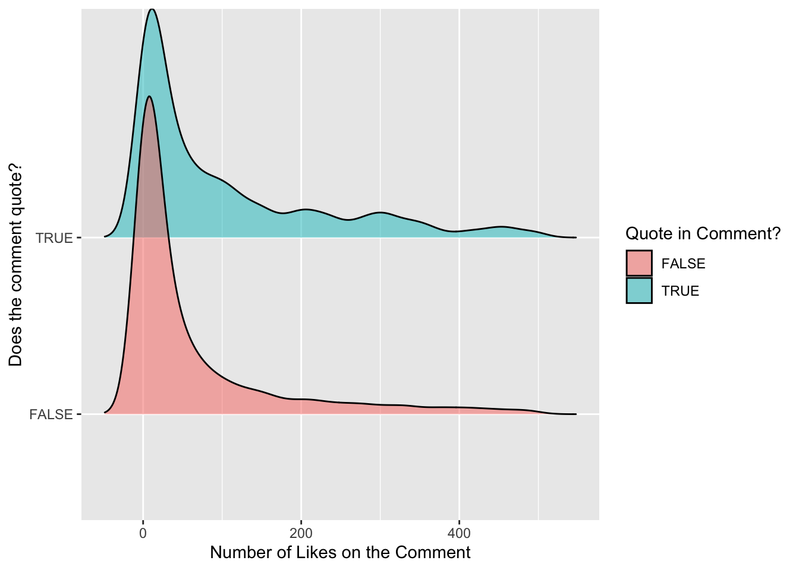
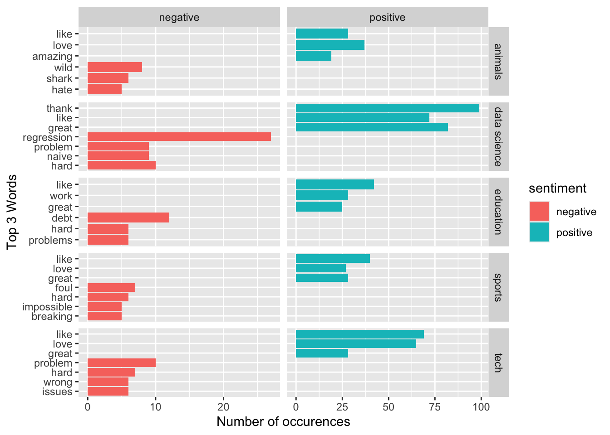
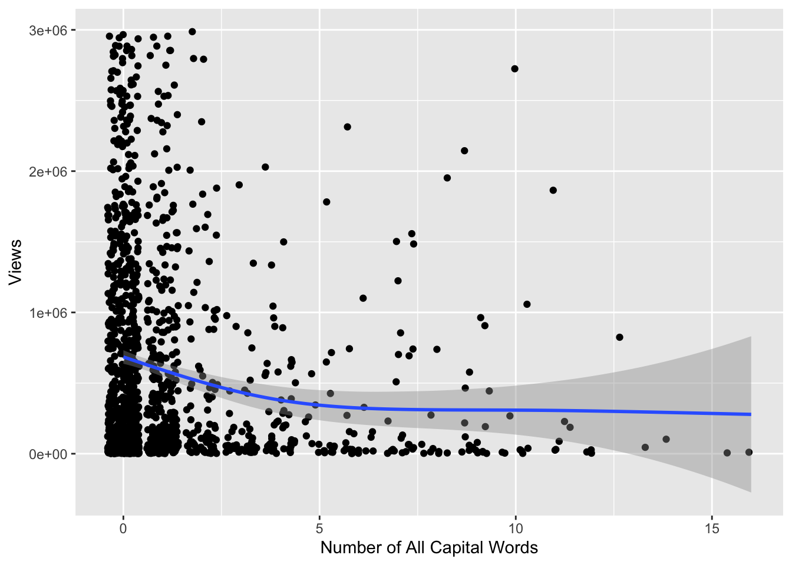
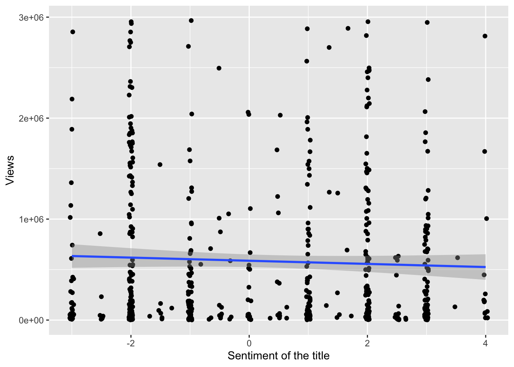
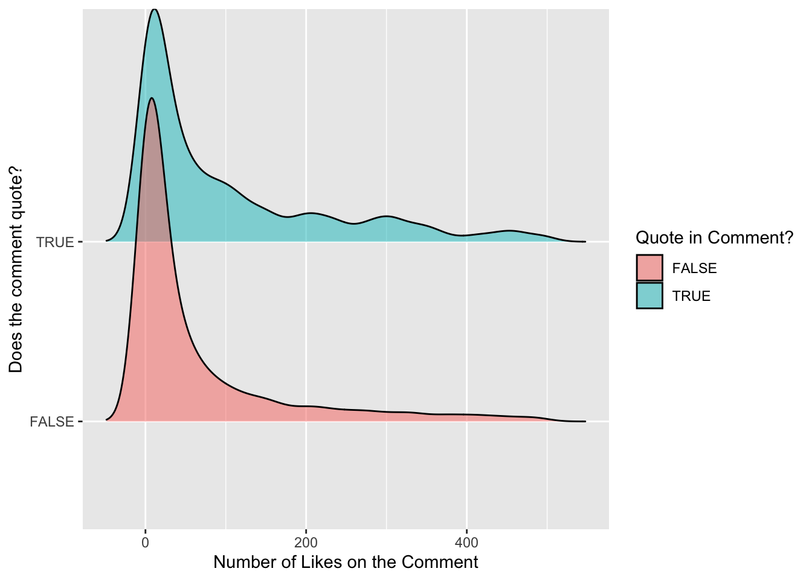
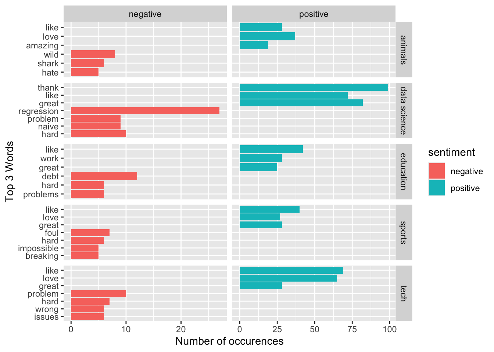

Youtube first started as a simple domain in 2005 that allowed anyone to upload and share videos as they pleased. It has now grown into a multibillion enterprise that has become the defacto video sharing platform on the internet. Currently, many people make their livelihood on Youtube and as such use, people are constantly finding ways to boost their visibility on the platform and build their channel.
In this project, I seek to use a kaggle database of Youtube Statistics to analyse aspects of a video to see what increases metrics such as its views and likes. Additionally, I seek to assess how comments and their perceived sentiment affect a video’s performance.
New names:
Rows: 18409 Columns: 5
── Column specification
──────────────────────────────────────────────────────── Delimiter: "," chr
(2): Video ID, Comment dbl (3): ...1, Likes, Sentiment
ℹ Use `spec()` to retrieve the full column specification for this data. ℹ
Specify the column types or set `show_col_types = FALSE` to quiet this message.
• `` -> `...1`
New names:
Rows: 1881 Columns: 8
── Column specification
──────────────────────────────────────────────────────── Delimiter: "," chr
(3): Title, Video ID, Keyword dbl (4): ...1, Likes, Comments, Views date (1):
Published At
ℹ Use `spec()` to retrieve the full column specification for this data. ℹ
Specify the column types or set `show_col_types = FALSE` to quiet this message.
• `` -> `...1`
#---------------------------------------comments <- comments %>%rename(vid_id =`Video ID`) %>%select(-Sentiment)stats <- stats %>%rename(vid_id =`Video ID`) %>%rename(published =`Published At`)comments <- comments %>%filter(!(str_detect(Comment, "[^\x01-\x7F]+"))) #Filter only english comments with english characters by using a regular expression that gets rid of items not in unicode. #(Regex 1) (Str_ Function 1)comments_vids <- comments %>%left_join(stats, by ="vid_id")
Warning in left_join(., stats, by = "vid_id"): Detected an unexpected many-to-many relationship between `x` and `y`.
ℹ Row 17 of `x` matches multiple rows in `y`.
ℹ Row 1 of `y` matches multiple rows in `x`.
ℹ If a many-to-many relationship is expected, set `relationship =
"many-to-many"` to silence this warning.
#-------------------------------------------------#Split the comments into the individual wordswords_comments <- comments_vids %>%unnest_tokens(word, Comment, token ="words") %>%rename(Comment_likes = Likes.x, Video_likes = Likes.y )#Split the title into the individual wordswords_title <- comments_vids %>%unnest_tokens(word, Title, token ="words") %>%rename(Comment_likes = Likes.x, Video_likes = Likes.y )#----------------------------------------------------#Sentimentsbing_sentiments <-get_sentiments(lexicon ="bing")afinn_sentiments <-get_sentiments(lexicon ="afinn")nrc_sentiments <-get_sentiments(lexicon ="nrc")
EDA
#Different keywords that I will use as categoriesstats %>%group_by(Keyword) %>%summarise(mean_views =mean(Views), mean_comments =mean(Comments), mean_likes =mean(Likes) ) %>%arrange(desc(mean_likes))
Another key thing to look at is how these statistics vary among different keywords. For the sake of this project I will use these keywords as categories. Though some keywords do include very specific things such as “Mrbeast” or “Apple”, so I will choose a few broad topics to analyse. In order to assess a wide range, I have chosen “Animals, Tech, Education, Sports” and I added “data science” for my own curiosity.
Comments are an indispensable part of the Youtube experience as it allows people to give feedback, tell jokes and ultimately build a community around a channel. In this section, I will do some analysis of these comments to see if we can find any trends in what people are commenting and the sentiment.
One common thing that comments do is quote key lines from the video. These comments remind people of funny or stand out moments in a video usually reinforcing the impact. I would to investigate if these comments tend to get more engagement from others.
quoted <- comments %>%mutate(quote =str_extract_all(str_to_lower(Comment), '".*\"')) %>%mutate(quote_bin =str_detect(str_to_lower(Comment), '".*\"'))quoted %>%filter(Likes <500) %>%#Mean likes is 1000, median is about 35, 500 seems to be a reasonable amount since most comments don't pass this mark ggplot(aes(x = Likes, y = quote_bin, fill = quote_bin ))+geom_density_ridges(alpha =0.5) +labs (y ="Does the comment quote?",x ="Number of Likes on the Comment",fill ="Quote in Comment?" )

The graph above is a density plot for comments that include a quote. We see that the number of likes on a comment that includes a quote and doesn’t have very similar distributions. The comments that do include a quote however appear to have a slightly higher mean value of likes and has a higher proportion of highly liked comments. It appears that my hypothesis may be correct.
Sentiment Analysis
Another interesting aspects of comments is how varied the sentiment can be.
words_comments |>inner_join(bing_sentiments) |>filter(Keyword %in% categories ) |>count(sentiment, word, Keyword, sort =TRUE) |>group_by(sentiment, Keyword) |>slice_max(n, n =3) |>ungroup() |>ggplot(aes(x =fct_reorder(word, n), y = n, fill = sentiment)) +geom_col() +coord_flip() +facet_grid(Keyword ~ sentiment, scales ="free") +labs(x="Top 3 Words",y ="Number of occurences" )

This plot above is a coded bar graph of negative and positive sentiment of words in the different categories. For the sake of reducing clutter, I have limited the choice to the top three contributing words for each category, both negative and positive. We see the words “like”, “love” and “great” are common in almost all categories for contributing to the positve sentiment of comments. There is however more diversity in the negative words with unique ones like “Shark” being a negative for animals and words like “problems” and “hard” being negative in data science and education. For each category, the negative words seem congruent with the categories while positve words seem more generic.
Titles
Capital Letters
In order to stand out and grab attention, many videos have opted to have flashy titles that grab attention. A simple way to do this is to just add more capital letters since they convey a sense of urgency and may lend to more people clicking. For a more comprehensive view of the impact of capital letters, I have included all categories.
comments_vids_capitals <- comments_vids %>%mutate(capitals =str_count(Title, "\\b[A-Z]{2,}\\b")) %>%#Regex 2 #String function #2rename(Comment_likes = Likes.x, Video_likes = Likes.y )comments_vids_capitals %>%group_by(vid_id) %>%summarise(mean_views =median(Views), mean_comments =mean(Comments), mean_likes =mean(Video_likes), mean_cap =mean(capitals)) %>%#Using mean here to just get the number since I grouped by video. filter(mean_views <3000000) %>%ggplot(aes(x = mean_cap, y = mean_views))+geom_jitter()+geom_smooth(se = T) +labs(x ="Number of All Capital Words",y ="Views" )

The above graph shows the number of views vs the number of all capital words in the title. We see the x-axis ranges form 0 to 16 and the number of views ranges from 0 to 3 million (videos above this value act as outliers). We see the majority of videos don’t contain less than 5 all capital words and we see a lot of variation in views for these videos. Contrary to my hypothesis, we see that actually videos with more all captial letters appear to have even less views than those who have less. This effect may be affected by the popularity of the channel itself. Additionally, flashy titles may have the oopposite effect since people may assume they are clickbait.
Sentiment of the titles
Another aspect I would like to investigate is the sentiment of the titles. I am of the belief that social media tends to be more polarizing and videos try to exacerbate negative stories in order to bring more attention. We can test this correlation and see if titles are trending towards negative sentiment.
words_title %>%inner_join(afinn_sentiments) %>%group_by(vid_id) %>%summarise(mean_views =median(Views), mean_comments =mean(Comments), mean_likes =mean(Video_likes), mean_sentiment =mean(value)) %>%filter(mean_views <3000000) %>%ggplot(aes(x = mean_sentiment, y = mean_views))+geom_jitter()+geom_smooth( method ="lm", se = T) +labs (x ="Sentiment of the title",y ="Views" )

The graph above shows the sentiment of a video title compared to the ammount of views the video had. We see the sentiment value ranges from -4 to 4 and the number of views ranges from 0 to 3 million. We see that there does not seem to be a strong relationship between the sentiment of the title and the number of views on the video. There is a large amount of variation in the views for almost all the sentiments, so we see that there may be no significant reason to make a title more negative or more positive.
Comments
Comments are an indispensable part of the Youtube experience as it allows people to give feedback, tell jokes and ultimately build a community around a channel. In this section, I will do some analysis of these comments to see if we can find any trends in what people are commenting and the sentiment.
One common thing that comments do is quote key lines from the video. These comments remind people of funny or stand out moments in a video usually reinforcing the impact. I would to investigate if these comments tend to get more engagement from others.

The graph above is a density plot for comments that include a quote. We see that the number of likes on a comment that includes a quote and doesn’t have very similar distributions. The comments that do include a quote however appear to have a slightly higher mean value of likes and has a higher proportion of highly liked comments. It appears that my hypothesis may be correct.
Sentiment Analysis
Another interesting aspects of comments is how varied the sentiment can be.

This plot above is a coded bar graph of negative and positive sentiment of words in the different categories. For the sake of reducing clutter, I have limited the choice to the top three contributing words for each category, both negative and positive. We see the words “like”, “love” and “great” are common in almost all categories for contributing to the positve sentiment of comments. There is however more diversity in the negative words with unique ones like “Shark” being a negative for animals and words like “problems” and “hard” being negative in data science and education. For each category, the negative words seem congruent with the categories while positve words seem more generic.